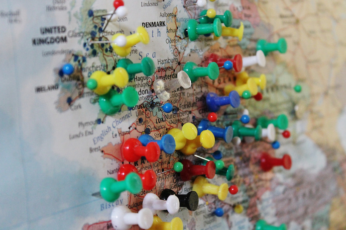

Guest post: Europe’s one-stop shop for public sector information is on the move
The ePSI platform has come to an end and the European Data Portal is continuing what it started ten years ago: shaping and informing Europe's open data community

The ePSI platform helped shape the open data landscape across many different European Member States. CC BY 2.0, uploaded by Charles Clegg.
By Eva van Steenbergen and Wendy Carrara
The ePSI platform was created in 2006 to provide a central platform for open data experts, enthusiasts and public sector organisations to learn more about the subject or contact others in the open data community.
The ePSI platform played a key role in shaping the open data landscape across many different European Member States. For example, new legal documents were published on the platform by some countries in order to inspire others. Over the course of ten years, the ePSI platform published many different reports and articles about open data and related topics. These ranged from the political, with pieces on open data as a tool to fight corruption, to the technical, with reports around linked data.
We wish to thank the ePSI team for their great work in building such a valuable resource, and since their website has now closed we are delighted to be able to give it a new home.
Hundreds of ePSI reports and blogs adopted by the European Data Portal
The European Data Portal (EDP) harvests the metadata of public sector information available on public data portals across European countries, but also acts as resource base for open data-related reports, blogs and events.
All the ePSI topic reports are already on the EDP library. This section includes around 80 ePSI topic reports, ranging from national reports to technical or domain-specific content. In the coming month, the library will be expanded to feature about 300 ePSI platform blogs.
In response to some Member States requesting access the ePSI Scoreboard – a crowd-sourced initiative that aims to assess open data maturity using 100 indicators – EDP is making the entire method available and easily reproduced via Excel files with indicators and accompanying documentation.
Keeping Europe's open data community alive
As well as publishing reports, the EDP focuses on sharing important open data news and events for its growing community. Did you read about Open Government Week in Romania? And did you know London has this month released a City Data Strategy? Go to the EDP news section for the latest.
Join the conversation
Do you have stories to share with us? Do you know about specific open data events in your city or region? Share them with the EDP project team so we can help you promote them. We also welcome any suggestions for improvement that you might have, and invite you to take part in our survey so we can better understand the economic benefits of open data.
This blog was written by Eva van Steenbergen and Wendy Carrara on behalf of the European Data Portal. Follow @EUDataPortal on Twitter._
The European Data Portal is developed by the European Commission with the support of a consortium led by Capgemini, including INTRASOFT International, Fraunhofer Fokus, con terra, Sogeti, the Open Data Institute, Time.Lex and the University of Southampton.